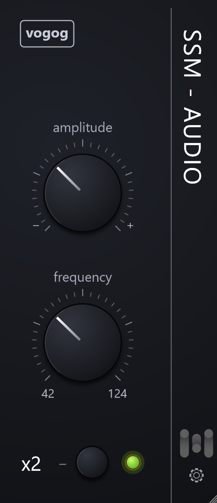

VOGOG is a free high-pass filter for kick and bass. Three controls, zero latency.
Download for Windows (v1.0.1) Download for macOS macOS help
Windows 10/11 64-bit, macOS 10.15+. VST3. Free.
Install and activate
- Close your DAW, run the installer, then rescan plugins in your DAW.
- Put VOGOG on a track, type your e-mail address and press Activate. This is done once per computer and needs the internet.
Manual and help
Manual (English) Руководство (по-русски)
Questions and ideas: Telegram. More from SSM-Audio: ssm-audio.github.io.
По-русски
VOGOG — бесплатный фильтр высоких частот для бочки и баса. Три ручки, нулевая задержка.
Закройте DAW, запустите установщик, пересканируйте плагины. Поставьте VOGOG на дорожку, введите адрес электронной почты и нажмите Activate (один раз на компьютер). Политика конфиденциальности.